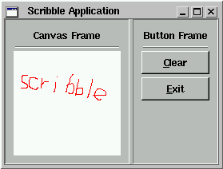

Introduction
FOX
Programming.
To illustrate the facility with which you can build a FOX application,
we're going to build a few simple FOX applications. The first application
called Scribble. A picture of the Scribble application is shown below:

Fig 1. The Scribble Application.
Scribble demonstrates how to use the FOX Layout Managers, how to create
Buttons, and how to handle messages. Enough talk, lets start coding!
The very first thing is to include the FOX header files. This is
simple, as there is just one thing you need to include:
Next, we need an Application object; each FOX application needs exactly
one of these. The basic application object FXApp contains information
about the display, as well as a bunch of other stuff needed for running
a FOX application. In this case, as Scribble has only one main window,
we make a subclass of this object, and add a few additional member functions
and member data for the Scribble application.
The first line says ScribbleApp is derived from FXApp. Most classes
you will write in the course of programming with FOX are either directly
or indirectly derived from one single top level class called FXObject.
The next line line declares a number of member functions which every
object derived from FXObject should have; we've used a macro as it is always
the same, and more convenient to program this way.
Next, we add some member variables to keep track of the various Widgets,
and the drawing color. We also keep a flag to remember if the mouse
was down, and a flag to remember if the canvas is dirty, i.e. has been
scribbled on:
private:
FXMainWindow
*main;
// Main window
FXHorizontalFrame *contents;
// Content frame
FXVerticalFrame *canvasFrame;
// Canvas frame
FXVerticalFrame *buttonFrame;
// Button frame
FXCanvas
*canvas;
// Canvas to draw into
int
mdflag;
// Mouse button down?
int
dirty;
// Canvas has been painted?
FXPixel
drawColor;
// Color for the line
FOX handles events from the user through a system of messages sent
to a certain object. In this case, the received of the messages
is the ScribbleApp class. Thus, we need to add handler member functions
to catch these messages and perform some action in response. All
message handler functions in FOX have the same argument signature:
long onSomeCommand(FXObject* sender,FXSelector sel,void *ptr);
Where:
sender is the sender object that sent the message to
us.
sel is the selector, a combination of a message type
and message id, which identifies the action being performed.
ptr is a pointer to some event-related data; usually,
this points to the FXEvent structure which contains the event that led
to the message.
For the Scribble application, we want to handle mouse messages, as
well as messages from the two buttons:
public:
long onMouseDown(FXObject*,FXSelector,void*);
long onMouseUp(FXObject*,FXSelector,void*);
long onMouseMove(FXObject*,FXSelector,void*);
long onCmdClear(FXObject*,FXSelector,void*);
long onUpdClear(FXObject*,FXSelector,void*);
ScribbleApp also needs to define some new message ID's. A message
consists of a type and an id. The type
defines what has happened; the id identifies the source
of the message. Even though we know the object that sent us the message,
in many cases, we can be sent the same message from different sources,
and the id is much more convenient; so:
public:
enum{
ID_MOUSE=FXApp::ID_LAST,
ID_CLEAR,
ID_LAST
};
We typically define the list of messages some target understands as an
enum type. As the ScribbleApp class is derived from FXApp,
it also understands all the messages already understood by the basic FXApp.
Our new messages should have different numbers from those. Rather
than counting by hand, we let the compiler worry about this, by always
defining one extra message id with the name ID_LAST, a subclass
can simply use the ID_LAST of it's base class to start counting its message
id's from; if ever any new message id's are added to the base class, our
own messages are automatically renumbered by the compiler.
We wrap up the remainder of the ScribbleApp class declaration by defining
a constructor and one member function called create():
public:
ScribbleApp();
virtual void create();
};
In our implementation, the constructor ScribbleApp will actually
build the GUI. The create() function is a virtual function that is
called by the system. Most FOX Widgets have this create function.
FOX Widgets have a two-stage creation process; first, the client side Widgets
are constructed, using ordinary C++ constructors. Then, once the
whole widget tree is complete, a single call to the application's create()
function will create all the windows for those widgets. This two
step process is needed as the second step may only be executed one the
connecion to the display has been established.
Now, we're ready to implement this new class; in most cases, the previous
code would reside in a header file, while the implementation would be in
a C++ source file, of course. In the case of ScribbleApp, it is so
simple that we placed everything into one file.
The first thing to do is to define the message map.
The message map is a simple table that associates a message type,
and message id to a class's member function. Having
a message map allows us to send any message to any [FXObject-derived] object.
Thus:
FXDEFMAP(ScribbleApp) ScribbleAppMap[]={
//________Message_Type________________Message_ID_____________Message_Handler_______
FXMAPFUNC(SEL_LEFTBUTTONPRESS,
ScribbleApp::ID_MOUSE, ScribbleApp::onMouseDown),
FXMAPFUNC(SEL_LEFTBUTTONRELEASE, ScribbleApp::ID_MOUSE,
ScribbleApp::onMouseUp),
FXMAPFUNC(SEL_MOTION,
ScribbleApp::ID_MOUSE, ScribbleApp::onMouseMove),
FXMAPFUNC(SEL_COMMAND,
ScribbleApp::ID_CLEAR, ScribbleApp::onCmdClear),
FXMAPFUNC(SEL_UPDATE,
ScribbleApp::ID_CLEAR, ScribbleApp::onUpdClear),
};
Note several things about this table; first, there are several messages
with the same id, but a different type. Message
types indicate what happened, for example, SEL_LEFTBUTTONPRESS means that
the left mouse button was just pressed. The message id identifies
the source. FOX defines a large collection of message types, each
of them has a specific meaning.
Next, we need to implement the ``boilerplate'' stuff that the previous
FXDECLARE macro has declared:
FXIMPLEMENT(ScribbleApp,FXApp,ScribbleAppMap,ARRAYNUMBER(ScribbleAppMap))
This the first argument of the macro should have the name of the class,
in this case ScribbleApp; the second argument should be the name of the
class from which the class has been derived; in this case, that's FXApp.
The last to arguments are a pointer to the message map, and the number
of messages in that map. FOX has a convenience macro ARRAYNUMBER()
that expands to the number of elements in a compile-time defined array;
this makes it easier to add or remove messages.
If the class you're defining implements no additional messages, the
last to arguments to FXIMPLEMENT should be simply NULL and 0.
The remainder of the ScribbleApp implementation is pretty much ordinary
C++ code. The constructor follows below:
// Construct a ScribbleApp
ScribbleApp::ScribbleApp(){
// Make my own main window
main=new FXMainWindow(this,"Scribble Application",DECOR_ALL,0,0,800,600);
contents=new FXHorizontalFrame(main,LAYOUT_SIDE_TOP|LAYOUT_FILL_X|LAYOUT_FILL_Y,0,0,0,0,
0,0,0,0);
// LEFT pane to contain the canvas
canvasFrame=new FXVerticalFrame(contents,FRAME_SUNKEN|LAYOUT_FILL_X|LAYOUT_FILL_Y|LAYOUT_TOP|LAYOUT_LEFT,0,0,0,0,10,10,10,10);
// Label above the canvas
new FXLabel(canvasFrame,"Canvas
Frame",NULL,JUSTIFY_CENTER_X|LAYOUT_FILL_X);
// Horizontal divider line
new FXHorizontalSeparator(canvasFrame,SEPARATOR_GROOVE|LAYOUT_FILL_X);
// Drawing canvas
canvas=new FXCanvas(canvasFrame,this,ID_MOUSE,FRAME_SUNKEN|FRAME_THICK|LAYOUT_FILL_X|LAYOUT_FILL_Y|LAYOUT_TOP|LAYOUT_LEFT);
// RIGHT pane for the buttons
buttonFrame=new FXVerticalFrame(contents,FRAME_SUNKEN|LAYOUT_FILL_Y|LAYOUT_TOP|LAYOUT_LEFT,0,0,0,0,10,10,10,10);
// Label above the buttons
new FXLabel(buttonFrame,"Button
Frame",NULL,JUSTIFY_CENTER_X|LAYOUT_FILL_X);
// Horizontal divider line
new FXHorizontalSeparator(buttonFrame,SEPARATOR_RIDGE|LAYOUT_FILL_X);
// Button to clear
new FXButton(buttonFrame,"&Clear",NULL,this,ID_CLEAR,FRAME_THICK|FRAME_RAISED|LAYOUT_FILL_X|LAYOUT_TOP|LAYOUT_LEFT,0,0,0,0,10,10,5,5);
// Exit button
new FXButton(buttonFrame,"&Exit",NULL,this,ID_QUIT,FRAME_THICK|FRAME_RAISED|LAYOUT_FILL_X|LAYOUT_TOP|LAYOUT_LEFT,0,0,0,0,10,10,5,5);
// Initialize private variables
drawColor=0;
mdflag=0;
dirty=0;
}
In almost all cases, it takes only one line of C++ code to create a FOX
Widget. Typically, that is a constructor invocation. As most
FOX Widget supply convenient default parameters to the constructor, you
may not have to specify most of them.
The first line in the body of the constructor creates a top level window;
toplevel windows in FOX have no parent, so pass in a pointer to the application
object (this in this case). The remaining parameters are
the window title, window decorations (such as resize handles, borders,
etc.), as well as the initial size and position. The initial size
and position may be ignored by your particular window manager, they are
just hints.
The next line creates a HorizontalFrame Widget. The HorizontalFrame
Widget is a Layout Manager that places
its children horizontally. The MainWindow Widget itself is also a
Layout Manager, and the options passed to the HorizontalFrame widgets constructor
determine how it is placed in the MainWindow.
Next, two VerticalFrame widgets are created, one for the drawing Canvas
and one for the buttons. In the canvasFrame, we then place a Label,
a grooved Separator, and the Canvas for drawing into. The Canvas's
target object is ScribbleApp (i.e. this), and its message is set to ID_MOUSE.
This causes Canvas to send all its messages to the ScribbleApp object,
with the ID set to ID_MOUSE.
Likewise, in the right buttonFrame we place a Label, a grooved Separator,
and two Buttons. The clear button has a caption "&Clear".
The & in front of a latter will cause the Button to install a hot-key
Alt-C automatically. The caption is drawn with the C underlines,
as in "Clear." The target of the clear Button is again the
ScribbleApp object, and its message ID is ID_CLEAR. Likewise, the
exit Button sends ID_QUIT.
Note that we didn't have to define ID_QUIT, as this is a message every
FXApp object already understands. Thus, we can simply hook
up buttons to their targets.
The remaining arguments to the Buttons determine its frame style (FRAME_THICK|FRAME_RAISED),
and how it is placed inside the VerticalFrame Layout Manager (LAYOUT_FILL_X|LAYOUT_TOP|LAYOUT_LEFT)
tells the Layout Manager to stretch the Buttons to fill the available room,
making them nicely the same size.
Finally, the ScribbleApp constructor initializes its member variables
for the drawing color and the flags.
Next, we implement the create() routine:
// Create and initialize
void ScribbleApp::create(){
// Create the windows
FXApp::create();
// Get color
drawColor=main->acquireColor(FXRGB(255,0,0));
// Make the main window appear
main->show();
}
First, we call the base classes' create, then we acquire a red color using
acquireColor. FOX supports a wide variety of displays, including
pseudo color displays. Thus, as FOX has no information about the
particular hardware it runs on until a connection with the display has
been established, colors need to be acquired in the second phase of the
Widget creation process.
Finally, the main window is shown on the screen by calling its show()
member function.
Now, we're ready to handle some messages:
// Mouse button was pressed somewhere
long ScribbleApp::onMouseDown(FXObject*,FXSelector,void*){
// While the mouse is down, we'll draw lines
mdflag=1;
return 1;
}
// The mouse has moved, draw a line
long ScribbleApp::onMouseMove(FXObject*, FXSelector,
void* ptr){
FXEvent *ev=(FXEvent*)ptr;
if(mdflag){
canvas->setForeground(drawColor);
canvas->drawLine(ev->last_x, ev->last_y,
ev->win_x, ev->win_y);
// We have drawn something, so
now the canvas is dirty
dirty=1;
}
return 1;
}
// The mouse button was released again
long ScribbleApp::onMouseUp(FXObject*,FXSelector,void*
ptr){
FXEvent *ev=(FXEvent*) ptr;
if(mdflag){
canvas->setForeground(drawColor);
canvas->drawLine(ev->last_x, ev->last_y,
ev->win_x, ev->win_y);
// We have drawn something, so
now the canvas is dirty
dirty=1;
// Mouse no longer down
mdflag=0;
}
return 1;
}
The first message handler simply sets a flag to remember than the mouse
is now down; the second handler draws a line from the last to the
current mouse positions; it then sets a dirty flag to 1 to remember that
the Canvas has been drawn onto. The last handler finishes the line,
and resets the mouse down flag.
Nothing remarkable here at all.
The next few message handlers are more interesting:
// Handle the clear message
long ScribbleApp::onCmdClear(FXObject*,FXSelector,void*){
// Erase the canvas
canvas->clearWindow();
dirty=0;
return 1;
}
// Update the clear button
long ScribbleApp::onUpdClear(FXObject* sender,FXSelector,void*){
FXButton* button=(FXButton*)sender;
// Button is available when canvas is dirty
only
dirty ? button->enable() : button->disable();
return 1;
}
The first message handler clears the canvas, then resets the dirty flag.
The second message handler updates the clear Button.
Each Widget in FOX receives a message during idle processing asking it
to be updated. For example, Buttons can be sensitized or desensitized
when the state of the application changes. In this case, we desensitize
the sender (the clear Button) when the Canvas has already been cleared,
and sensitize it when it has been painted (as indicated by the dirty flag).
This GUI Update process is extremely powerful:- if an application has
N commands, and M Widgets to update for each command, one might have to
write NxM update routines; with the GUI Update process, one needs to write
only N+M routines. Moreover, if the application data change by some
other means (e.g. timers, external data inputs, mulitple computing threads,
etc), the GUI will automatically keep itself up to date without any additional
coding.
To complete the Scribble Application, only one thing remains:- to kick
it all off from the main() routine:
// Here we begin
int main(int argc,char *argv[]){
// Make application
ScribbleApp* application=new ScribbleApp;
// Start app
application->init(argc,argv);
// Create the application's windows
application->create();
// Run the application
application->run();
return 0;
}
First, we construct a ScribbleApp object, effectively building the whole
GUI. Subsequently, though a call to application->init(), we offer
FOX a first chance at the command line arguments of the application; FOX
removes those arguments it understands from the argument list, and sets
some internal variables from them [For example, the display variable].
Next, we create the application by calling application->create(), and
finally we run it. The run() member function of FXApp never returns
until the application is done.
Recap.
In the previous example, several FOX features have been discussed:
-
Building applications using FOX means building more C++ classes;
these new classes should always be derived from FXObject, either directly
or indirectly. The sophisticated developer will try and make these
new classes general, so that he/she may use these again in some other project.
Thus, the development effort may be leveraged many times over.
-
FOX uses a target/message system; Each message handler has three arguments:-
the sender of the message, which is always an object derived from FXObject,
the message selector, which is a combination of the message type
and message id, and a void pointer which may provide additional
information about the message; usually it refers to the FXEvent.
The message type identifies the type of action that occurred, whereas the
message id identifies the source of the message; it makes the message unique.
-
When defining new messages, use enums.
The first new message for a derived class should be equal to the base classes
ID_LAST. This way, the compiler takes care of unique message numbering.
Note that messages should be unique w.r.t. a specific target only;
unrelated targets do not have to be unique. If the class you're writing
may be subclassed later, define a message ID_LAST, so that the subclass
may define additional message id's starting from that point.
-
Major FOX building blocks already understand a bunch of messages, as well
as being able to send them; thus, you can hook these
building blocks up to each other in many cases, without
having to write any glue code.
-
During idle processing, FOX automatically updates each
Widget, by asking the Widget's target what its state
should be; the message being sent to the target object is of type SEL_UPDATE.
The GUI Update process is an important tool to use for large-scale applications,
where multiple developers may not even be aware of which widgets may need
updating when some data structure changes. With GUI Updating, it
is easy to keep it consistent.
-
Hot Keys may be set on Button captions simply by prefixing the hotkey latter
with an &. The so indicated letter will be automatically
underlined.
-
FOX uses a two-step process to build its Widgets; in the construction phase,
C++ data structures are built, and member data are filled in; in the second
phase, the connection to the display is established, and actual windows
are created for each Widget.
Copyright © 1998 Jeroen
van der Zijp, all rights reserved.